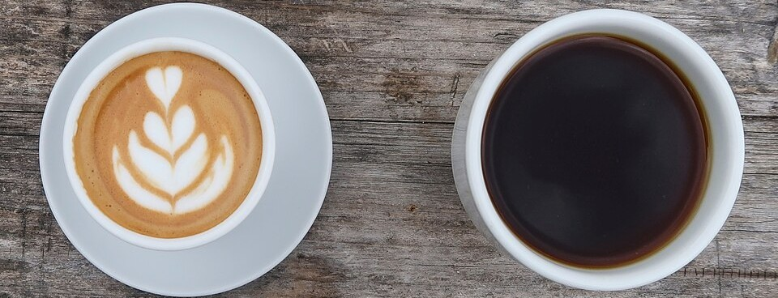
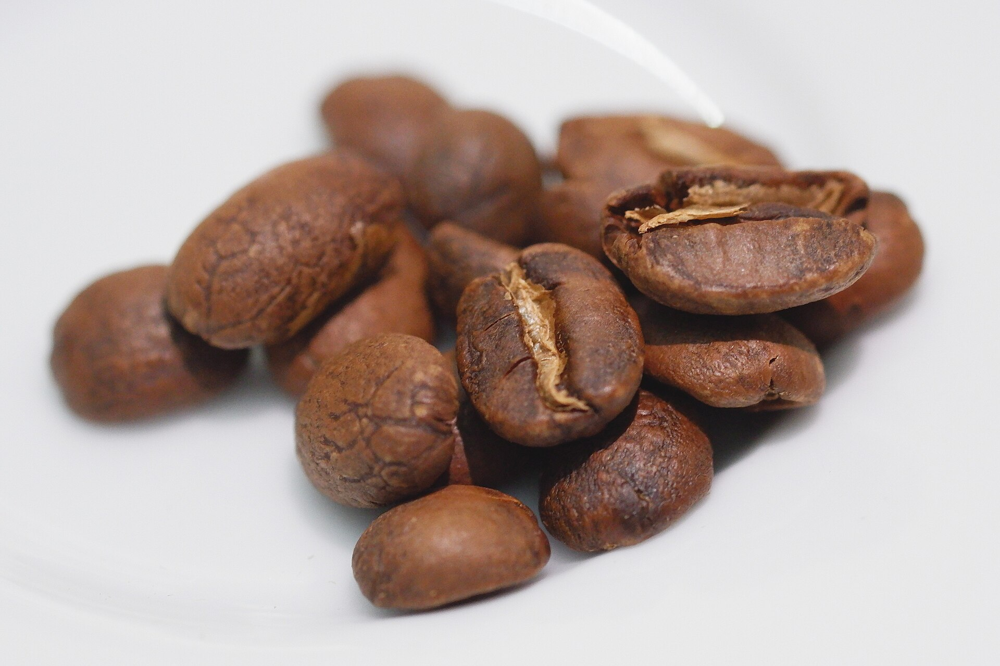

Il mondo del caffè
La vita è un bellissimo e interminabile viaggio alla ricerca della perfetta tazza di caffè.
Barbara A. Daniels
Le origini del caffè
Il caffè trova le sue origini in Etiopia, in particolare nella regione di Kaffa, nell'Africa orientale. La diffusione del caffè iniziò, in particolare nel XV secolo, quando la pianta venne coltivata nello Yemen e utilizzata anche dai monaci sufi per rimanere svegli durante le preghiere notturne. Successivamente, il consumo si diffuse in tutto il mondo arabo, raggiungendo città importanti come la Mecca, il Cairo e Istanbul. Nel XVI secolo il caffè arrivò anche in Europa attraverso i commerci e i contatti con l'Impero ottomano. Inizialmente era una bevanda rara e costosa, ma nel corso del XVII secolo la sua popolarità aumentò rapidamente. Nelle principali città europee iniziarono ad aprire le prime caffetterie, che divennero luoghi di incontro, discussione e scambio culturale. Durante il XVIII e il XIX secolo la coltivazione del caffè si diffuse in diverse aree tropicali, soprattutto in America centrale e meridionale, in Asia e in Africa. Paesi come il Brasile, la Colombia e il Venezuela diventarono importanti produttori, contribuendo alla crescita del commercio internazionale. Nel XX secolo la produzione e il consumo continuarono ad aumentare grazie allo sviluppo delle tecnologie, dei trasporti e dei metodi di lavorazione. Il caffè si trasformò così in una delle bevande più consumate al mondo, diventando parte integrante delle abitudini e delle tradizioni di numerose culture.
Varietà di pianta del caffè

Esistono 4 principali varietà di pianta di caffè le quali sono:
- Arabica:
- Quota di mercato: Copre circa il 60% - 70% della produzione mondiale;
- Ambiente di crescita: Alta quota (tra i 600 e i 2000 metri), in climi miti e temperati;
- Contenuto di caffeina: Basso, oscilla tra lo 0.9% e l'1.5%;
- Forma del chicco: Allungato e ovale, caratterizzato da un solco centrale sinuoso a forma di "S";
- Profilo aromatico: Delicato, dolce e complesso;
- Robusta:
- Quota di mercato: Copre circa il 30% - 35% della produzione globale;
- Ambiente di crescita: Bassa quota (da 0 a 900 metri), in climi caldo-umidi
- Contenuto di caffeina: Alto, (tra l'1.6% e il 2.8%);
- Forma del chicco: Più piccolo, tondeggiante, con un solco centrale quasi completamente dritto;
- Profilo aromatico: Deciso, intenso e amaro, con spiccate note di terra, legno e cioccolato
- Liberica:
- Quota di mercato: Inferiore al 2% della produzione mondiale;
- Ambiente di crescita: Bassopiani tropicali, richiede temperature elevate e molta acqua;
- Contenuto di caffeina: Basso (circa 1.2% - 1.4%)
- Forma del chicco: Molto grande e dalla forma asimmetrica, quasi "a goccia";
- Profilo aromatico: Particolare e audace, con un gusto legnoso e fumoso;
- Excelsa:
- Quota di mercato: Rappresenta una piccolissima percentuale, usata principalmente in miscele speciali;
- Ambiente di crescita: Piante imponenti che possono diventare veri e propri alberi alti fino a 20 metri;
- Contenuto di caffeina: Molto basso, intorno all'1%;
- Forma del chicco: Di medie dimensioni, con caratteristiche simili alla Liberica
- Profilo aromatico: Insolito e asprigno;
Tipi di caffè
Esistono decine di modi diversi per servire il caffè, e tra i principali si può trovare:

- Espresso: Estratto ad alta pressione;
- Ristretto: Più corto dell'espresso, con meno acqua e un gusto molto concentrato;
- Lungo: Ha una quantità maggiore di acqua rispetto all'espresso classico;
- Doppio: Consiste in due tazzine di espresso concentrate in un'unica tazza grande;
- Macchiato: Un espresso "macchiato" con una piccola aggiunta di latte o schiuma di latte;
- Cappuccino: Espresso mescolato con latte montato a vapore e una densa schiuma;
- Caffè Americano: Espresso diluito con una dose maggiore di acqua calda;
- Decaffeinato: Privato della caffeina tramite processi specifici;
- Marocchino: Espresso con cacao in polvere e schiuma di latte;
- Caffè Corretto: Espresso "corretto" con l'aggiunta di un distillato;
- Caffè Shakerato: Espresso shakerato con ghiaccio e zucchero liquidi, servito freddo
Per approfondire: